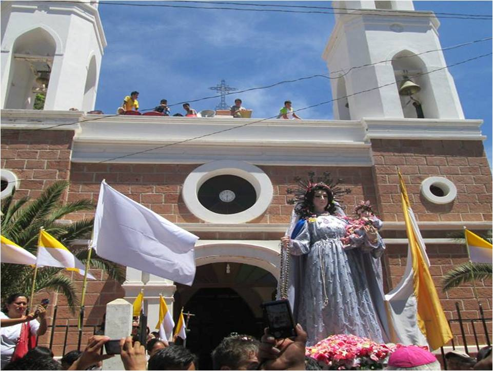

Mi ciudad: Villa Abecia - Sud Cinti - Chuquisaca - Bolivia
Mi municipio es uno de los más hermosos y pintorescos de Chuquisaca.


Conocida como el "Edén de los Cinti", Villa Abecia es la capital de la Provincia Sud Cinti en el departamento de Chuquisaca. Se encuentra en un valle estrecho rodeado de formaciones rocosas rojizas que contrastan con el verde intenso de sus viñedos.
Es famosa por su microclima templado, lo que la convierte en el refugio perfecto para quienes buscan escapar del frío o del ajetreo de las ciudades. Su arquitectura mantiene un aire colonial y tranquilo, donde la vida gira en torno a la plaza principal y la producción de vinos y singanis artesanales de alta calidad.

Este es, sin duda, el lugar más icónico de Villa Abecia. Se trata de una serie de piscinas naturales esculpidas por la erosión del agua sobre la roca sólida a lo largo de milenios.
El atractivo: El agua es cristalina y fresca, ideal para los días calurosos del valle. Las formaciones rocosas que las rodean crean un paisaje casi surrealista, como si fueran jacuzzis naturales de diferentes profundidades.
Experiencia: Es el lugar favorito para el "chapuzón" de fin de semana. Además, el entorno es perfecto para hacer fotografías por el contraste de las rocas rojas y el agua.
